Flow Designer Scripting
Purpose
Flow Designer scripting allows you to add server-side JavaScript logic inside a Flow Action when out-of-the-box Flow logic (conditions, lookups, updates) isn't enough.
It is primarily used for:
- Data transformation
- Conditional branching logic
- Calculations
- Complex record lookups
- Dynamic outputs
It is not meant to replace Script Includes or business logic layers. See Flow Script vs Business Rule
Where It Runs
- Server-side
- Executes within the Flow runtime engine
- Runs when the Flow is triggered
- Scoped to the application of the Flow
You do not have access to client-side objects like g_form.
Types of Flow Scripting
Workflow Editor is outdated and Flow Designer is now part of Workflow Studio. Newer releases utilize Flow Designer
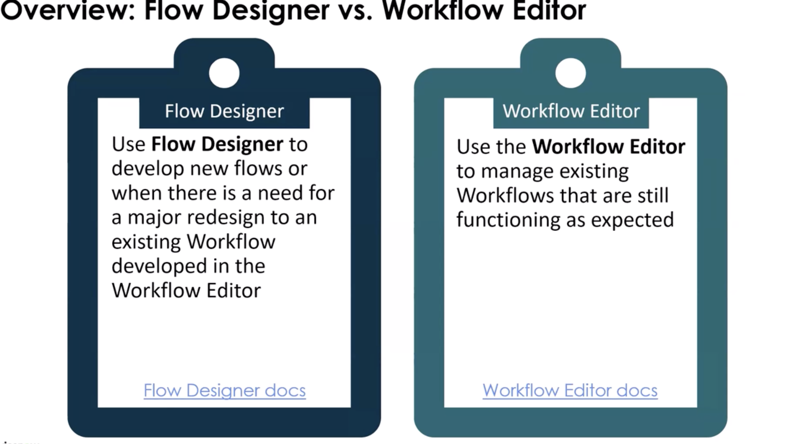
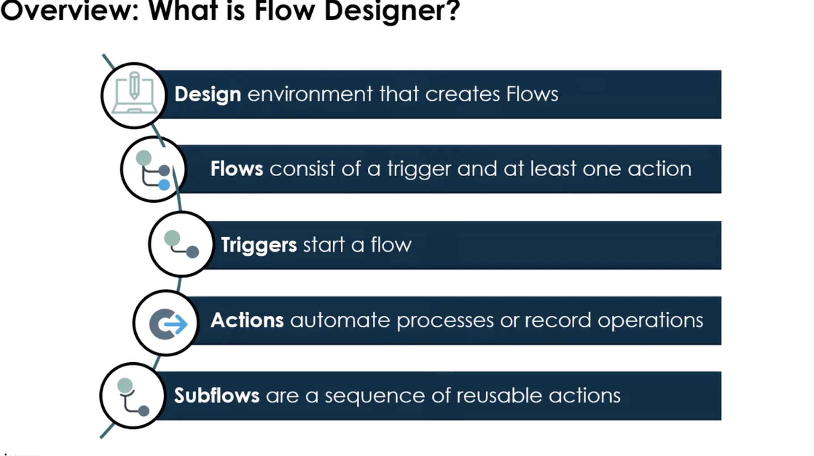
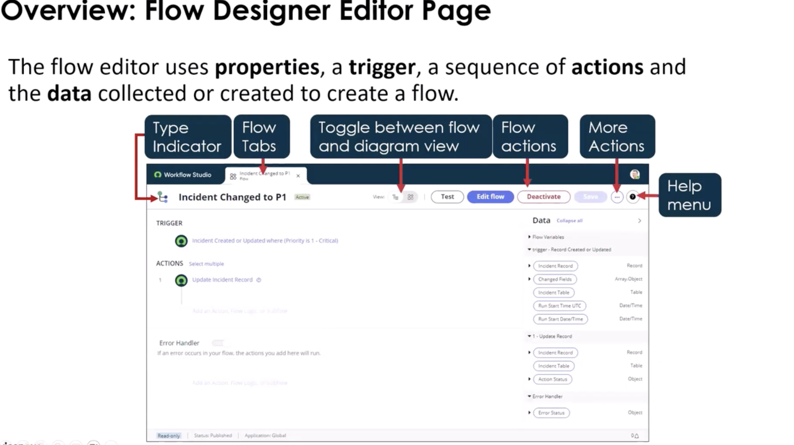
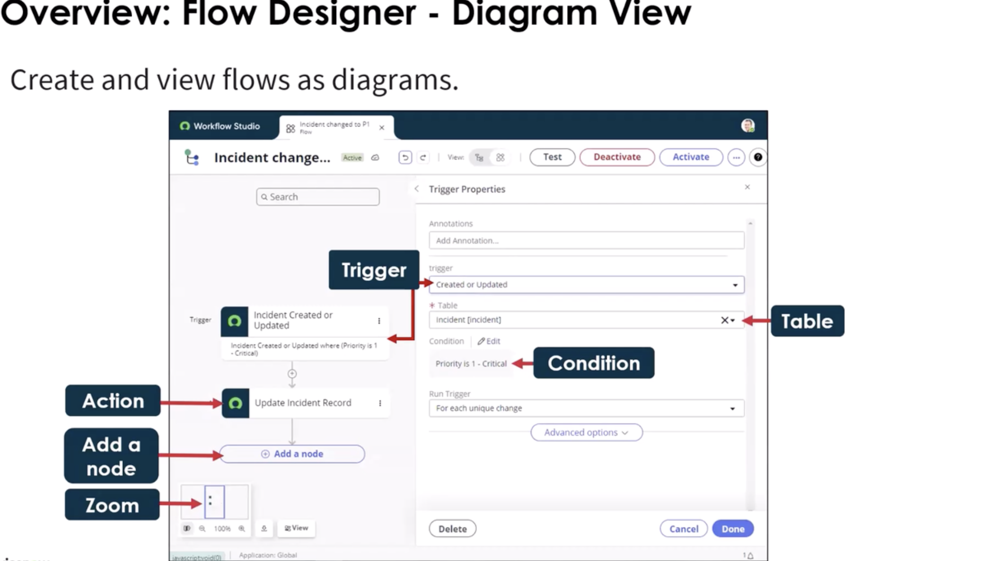
Types of Triggers
- Condition
- date-based
- application trigger: when you order something in the service catalog
Actions
A group of reusable operations that automate the Now Platform features without having to write code. You can test the actions just like you would test a flow.
- Actions (can be custom), Flow Logic, or Subflows
- Subflows do not have to have a trigger you can call them from an action
1. Script Step (Inside Flow)
- Inline JavaScript
- Uses
inputsandoutputs - Good for lightweight logic
- If used as a subflow, you do not have to use a Flow to make it run. -- Server-Side Scripts - Business Rule, UI Action, Script Includes -- Server-Side Apis - Can be used in a none-blocking mode -- Client-Side JS Library - GlideFlow --> uses promises -- THere is a Code Snippet Generator
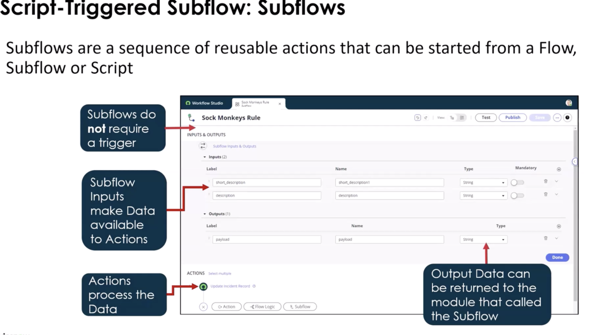
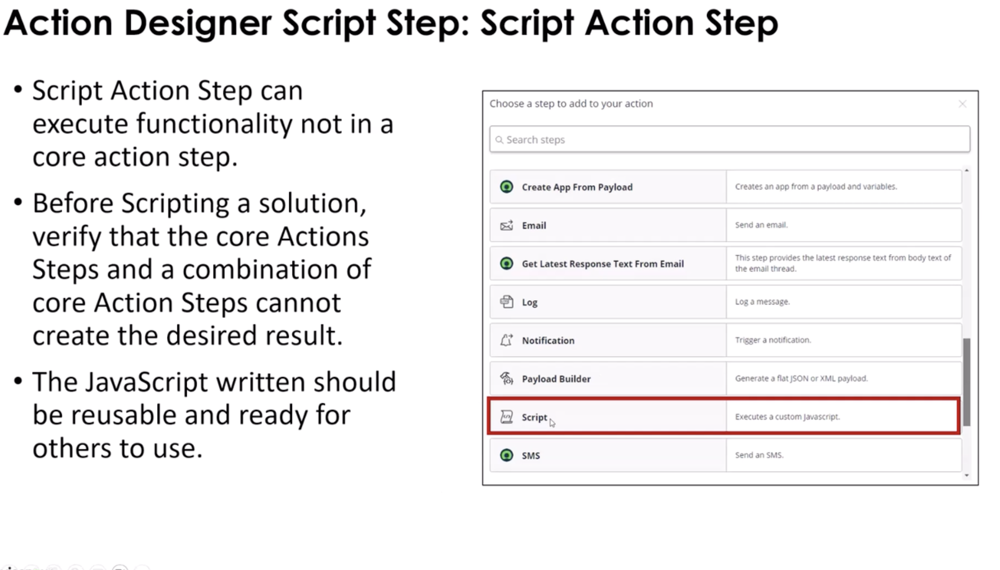
2. Custom Action Script
- Script inside a reusable Action
- Best practice when logic may be reused
- Encouraged for maintainability
- Use only when ServiceNow doesn't provide the functionality
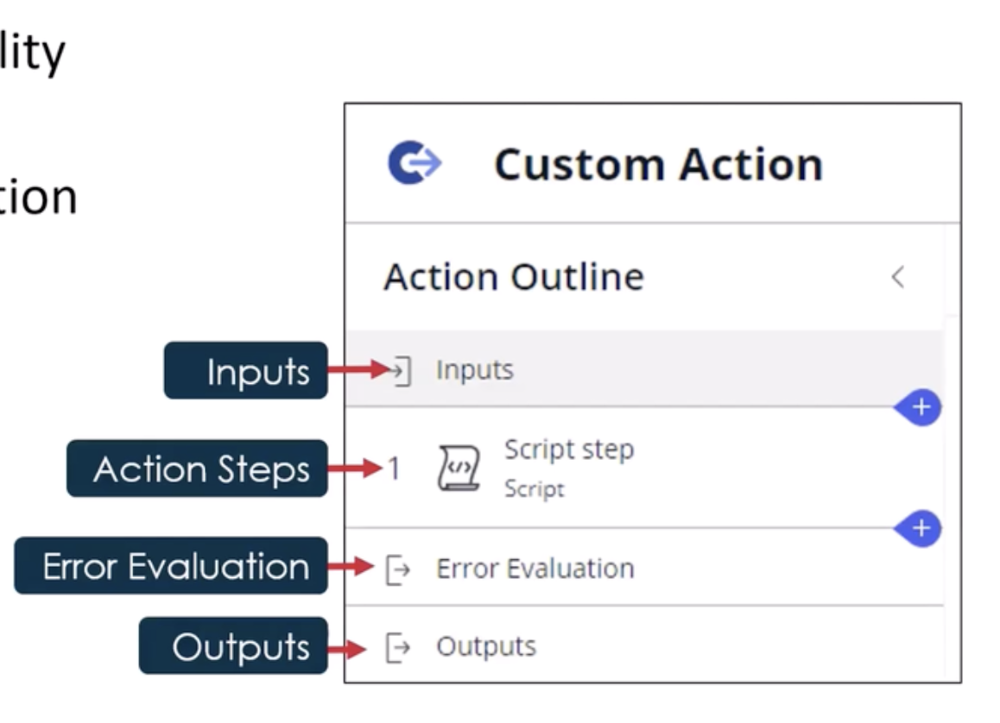
3. In-line Scripting
- Script inside a record or table for an action based on the current context
- Can be used for additional filtering on the current record
- Use if you need to set or modify values during a flow
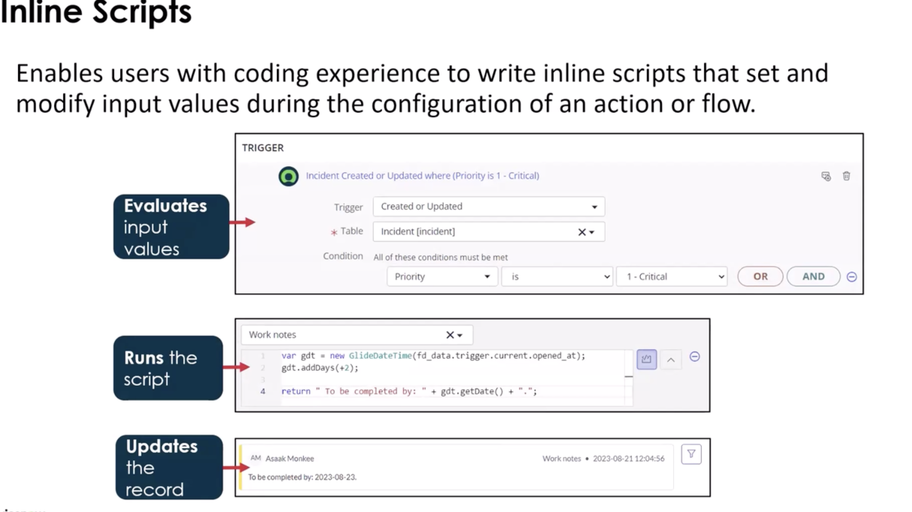
Flow API vs FlowScript API
Flow API
- Designed for managing Flows programmatically (starting flows, retrieving context, etc.)
- Typically used outside a script step, e.g., in Script Includes, UI Actions, or other server scripts
- Provides high-level operations on Flow execution
FlowScript API
- Designed for inside Flow scripting steps
- Scoped to the current Flow context
- Provides access to inputs, outputs, current, and Flow-specific utility methods
- Meant for custom logic in the Flow, not for starting other Flows
| Feature | Flow API | FlowScript API |
|---|---|---|
| Scope | External scripts / global | Inside Flow script steps |
| Purpose | Control or inspect Flows | Run custom logic inside a Flow |
| Access | Flow context table, API methods | inputs, outputs, current record |
| Example Use Case | Start a Flow from a Script Include | Determine dynamic approver inside a Flow step |
Note:
- Flow API → Think “control Flows from outside”
- FlowScript API → Think “custom logic inside Flow”
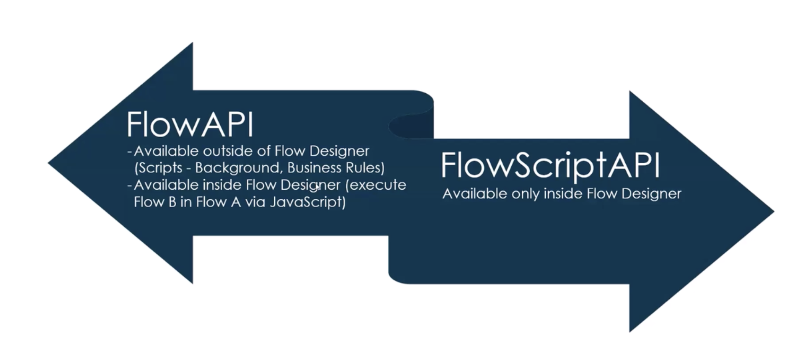
ScriptableFlowRunner API
Call Order
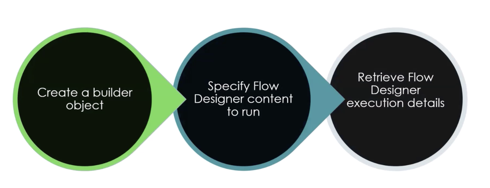
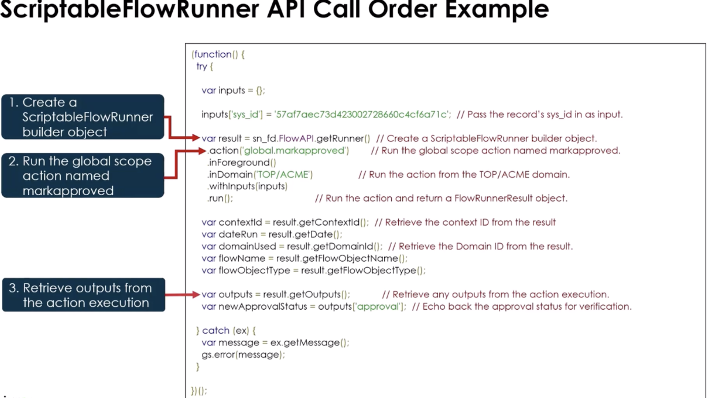
Glide Flow API
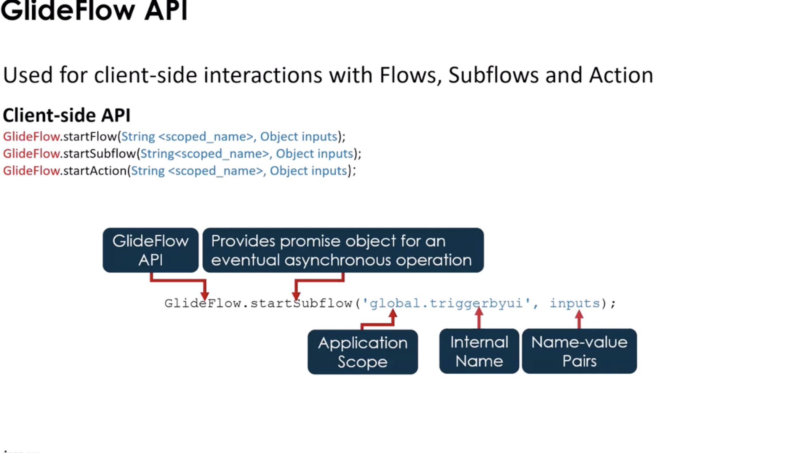
Use When
Use Flow scripting when:
- You need logic not achievable via Flow conditions
- You need to manipulate or transform data
- You must dynamically determine values (approvers, assignment groups, etc.)
- You need multi-step record queries
Do NOT use it when:
- Logic is reusable across multiple Flows → use Script Include
- The logic is large or complex
- It belongs in core business rules
- You need synchronous database validation logic
Script Structure
Inside a Script step:
(function execute(inputs, outputs) {
var gr = new GlideRecord("incident");
gr.addQuery("priority", 1);
gr.query();
var count = 0;
while (gr.next()) {
count++;
}
outputs.highPriorityCount = count;
})(inputs, outputs);
Key Objects
inputs→ Data passed into the script stepoutputs→ Values returned to the Flowcurrent→ Available only in record-triggered FlowsGlideRecord→ For database operationsgs→ System logging
What It Touches
- Tables
- Flow context tables
- Any table queried via GlideRecord
- APIs
- GlideRecord
- GlideAggregate
- GlideSystem (
gs) - Scoped APIs
Remember: It runs in the application scope of the Flow. xs
Performance Considerations
- Avoid large loops over massive tables
- Use indexed fields in queries
- Prefer
GlideAggregateover manual counting - Avoid unnecessary record updates inside loops
- Consider asynchronous design
Flows can become slow if scripts are inefficient.
Common Mistakes
- Stuffing complex business logic into Script steps
- Not handling null/undefined inputs
- No error handling
- Hardcoding sys_ids
- Querying entire tables without filters
- Repeating logic across multiple Flows instead of using an Action
Error Handling Pattern
Enables flows to catch errors, and run a sequence of actions and sublows to correct issues. Can set to log the error or send a notification as well.
(function execute(inputs, outputs) {
try {
if (!inputs.userSysId) {
throw "User Sys ID is required";
}
var user = new GlideRecord("sys_user");
if (!user.get(inputs.userSysId)) {
throw "User not found";
}
outputs.manager = user.manager;
} catch (e) {
gs.error("Flow Script Error: " + e);
outputs.errorMessage = e;
}
})(inputs, outputs);
1-Min Example (Dynamic Approval Path)
Use Case: Determine approver based on amount.
(function execute(inputs, outputs) {
if (inputs.amount > 10000) {
outputs.approver = inputs.director;
} else {
outputs.approver = inputs.manager;
}
})(inputs, outputs);
Flow then routes approval dynamically.
Additional notes
- Flow scripting is server-side only
- Actions are reusable --- Script steps are not
- Prefer low-code Flow logic when possible
- Script Includes are better for reusable complex logic
- Know when to choose Flow vs Business Rule
When to Choose Flow vs Business Rule
Quick Decision Guide
Choose Flow Designer When:
- You want low-code / declarative logic
- The process involves approvals, notifications, or orchestration
- The logic spans multiple tables or systems
- You want visibility into execution (Flow context)
- Admin-level maintainability is important
- The logic is asynchronous or event-driven
Choose Business Rule When:
- You need synchronous execution during database operations
- The logic must run before/after insert, update, delete, or query
- You need tight control over transaction behavior
- Data integrity must be enforced immediately
- Performance is critical and must occur inline
Comparison Section
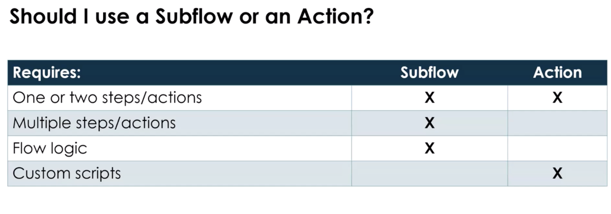
Flow Script vs Business Rule
Feature Flow Script Business Rule
Execution Runs inside Flow engine Runs during DB transaction Timing After trigger Before/After/Async Scope Flow context Table-specific Visibility Easy UI tracking Requires logs/debug Complexity Should stay light Can handle heavy logic Best For Orchestration logic Data integrity enforcement
Key Difference
Flow Script is orchestration-focused.\ Business Rules are transaction-focused.
If the database operation must be controlled --- use a Business Rule.\ If you're automating a process --- use Flow.
Flow vs Script Include
Feature Flow Script Include
Type Process automation tool Reusable code library Reusability Limited (unless Action) High Audience Admin + Dev Developer UI Visual builder Code-only Best For Process orchestration Shared business logic
Rule of Thumb
If logic will be reused across:
- Business Rules
- Flows
- UI Actions
- APIs
→ Put it in a Script Include.
Flow should call Script Includes for complex reusable logic.
Flow vs Workflow (Legacy)
Feature Flow Designer Workflow (Legacy)
Platform Direction Current standard Deprecated direction UI Modern, visual Classic workflow editor Extensibility Actions + Spokes Activities Scripting Inline + Actions Script activities Future Support Active development Maintenance mode
Important!
- Workflow is legacy.
- Flow Designer is the strategic platform.
- New implementations should use Flow Designer.
Unless maintaining an older instance, choose Flow.
mental model:
- Script Include = Logic Layer\
- Business Rule = Data Enforcement Layer\
- Flow Designer = Process Automation Layer
If you separate these correctly, your applications scale cleanly and you avoid logic duplication.